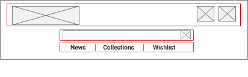
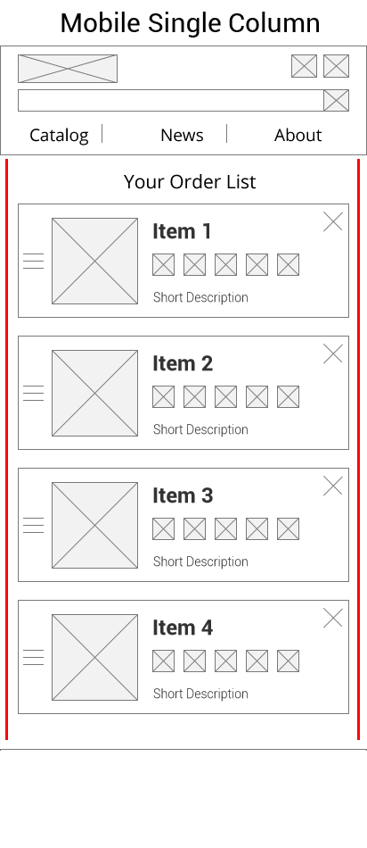
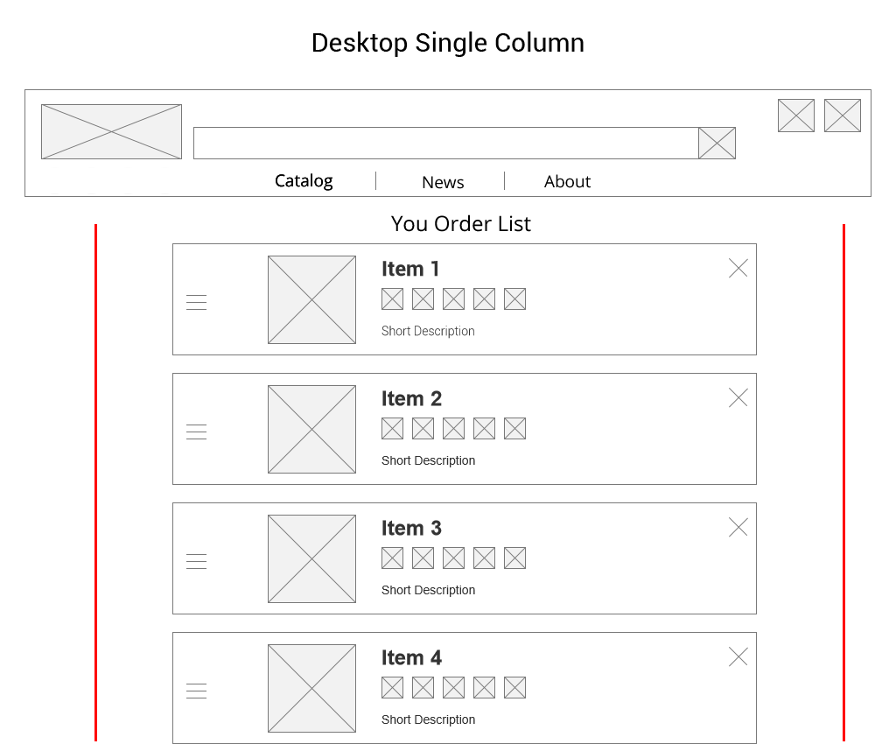
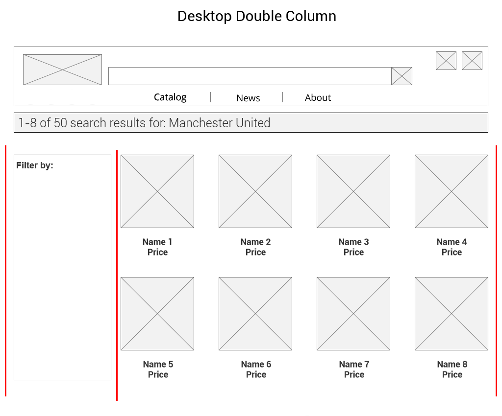

Structure
Main Navigation
The main navigation for Footy Fans is located at the header bar. This bar features most of the pages on the mobile site and all of the pages on the desktop site. This navigation uses flexboxes with three items containers aligned in a single column, like so:

HTML code
In order to achieve this effect, first we must define a flexbox container and the three item containers that will house the content. While the search bar is not part of the navigation, it is part of the header bar, therefore we must create a container that will house the search bar.
<div class="nav-container box">
<div class="box-item-logoProfileCart">
</div>
<div class="box-item-searchBar">
</div>
<div class="box-item-newsCollectionWishlist">
</div>
</div>
Next, we will insert the relevant content into each of these respective item containers.
<div class="box-nav-container">
<div class="box-item-logoProfileCart">
<a href="main.html"><img src="images/logo.png"/></a>
<button class="header-square-button" onclick="linkTo('profile.html')">
<button class="header-square-button" onclick="linkTo('cart.html')">
</div>
<div class="box-item-searchBar">
<form>
<label for="search-input" id="label-search">Search here: </label><input type="text" name="search-bar" id="search-input">
<button type="reset" id="reset-button"><img src="images/reset-icon.png" alt="reset-icon" id="reset-icon" onclick="clearText('search-input')"/></button>
<button type="submit" id="search-button"><img src="images/search-icon.png" alt="search-icon" id="search-icon"/></button>
</form>
</div>
<div class="box-item-newsCollectionWishlist">
<button class="header-rectangular-button" onclick="linkTo('news.html')">Header Button</button>
<button class="header-rectangular-button" onclick="linkTo('collections.html')">Header Button</button>
<button class="header-rectangular-button" onclick="linkTo('wishlist.html')">Header Button</button>
</div>
</div>
CSS code
Now that we have implemented the HTML code for the navigation bar, it is time to implement and style the navigation bar with CSS. First we must set the container to use flexbox in a column direction.
.box-nav-container{
display: flex;
flex-direction: column;
align-items: stretch;
}
Next, we will set each item container to have use flexbox in a row direction.
.box-item-logoProfileCart{
display: flex;
flex-direction: column;
align-items: stretch;
}
Lastly, the first item container features elements that align left and right. Therefore we must style it so that the elements reflect this appearance.
.header-square-button{
align-self: flex-end;
}
JavaScript code
In order to make the buttons have a meaningful click, we set our JavaScript function for linking to other urls.
function linkTo(url){
location.href=url;
}
Website Grid Structure
At Footy Fans, the website uses three main kinds of grid structure. For the mobile version, we use a single column grid, as a grid with multiple columns will not fit on a mobile screen. On the desktop version, we use both a single column grid, as well as double column grid. The images below show our grid structure for all three of these types:



HTML code
The difference between a single column grid and a double column grid is between the flex items inside the flex container: one item for a single column, two items for a double column. As such, we only need to code the container and the items.
For the single column grid structure, we implement it as such:
<div id="box-container">
<div id="box-item">
</div>
</div>
For the single column complex grid structure, we implement it as such:
<div id="box-container">
<div id="box-item-container">
<div id="box-item">
</div>
<div id="box-item">
</div>
</div>
<div id="box-item">
</div>
</div>
For the double column grid structure, we implement it as such:
<div id="box-container">
<div id="box-item">
</div>
<div id="box-item">
</div>
</div>
CSS code
As we use flexbox, we must style our CSS code accordingly to each grid structure. For our single column grid structure, we use a flex-direction of column.
.box-container{
display: flex;
flex-direction: column;
align-items: stretch;
}
Note that the complex single column uses a nested flexbox. In this example, the first item container uses the flex-direction of row, so we must style the CSS such that it reflects this difference.
.box-item-container{
display: flex;
flex-direction: row;
align-items: stretch;
}
For our double column grid structure, we use a flex direction of row so that the items are aligned side by side.
.box-container{
display: flex;
flex-direction: row;
align-items: stretch;
}
Product Listing
A product listing on Footy Fans consist of three things: an image of the product, the name and its price. On the mobile page, the image and the name/price are in a row direction, while the image and the name/price are in a column direction for the desktop site:

HTML code
For both the mobile and desktop implementations, we use an unordered list to display our product listings.
<ul id="box-list-item">
<a href="item1.html"><li class="product-item">
<img src="placeholder1.png" class="product-image" alt="product-image"/>
<p>
Item1
</p>
<img src="rating1.png" alt="rating-image"/>
<p>
Price
</p>
<li></a>
CSS code
First we get rid of the bullet points that are implemented automatically as part of the unordered list.
#box-list-item{
list-style: none;
}
For our mobile version, we style our product listing so that the listing image and information are side-by-side with one another.
/* This is strictly for the mobile styling. Apply rules accordingly. */
.product-image{
float: left;
margin-right: 0.5em;
}
For our desktop version however, we style our product listing so that the listing image is above the information.
/* This is strictly for the desktop styling. Apply rules accordingly. */
.product-item{
text-align:center;
}